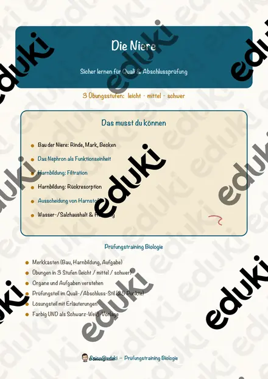
Die Niere – Prüfungstraining Biologie (Klasse 8)
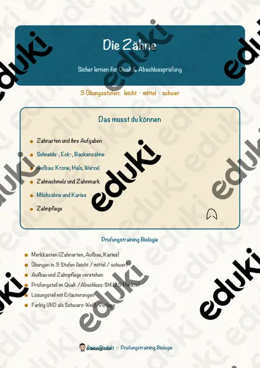
Die Zähne – Prüfungstraining Biologie (Klasse 8)
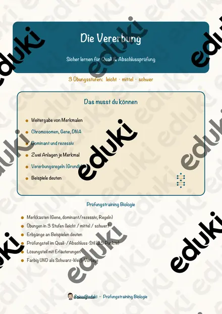
Die Vererbung – Prüfungstraining Biologie (Klasse 9)
Die Zelle – Prüfungstraining Biologie (Klasse 8)
Das Immunsystem – Prüfungstraining Biologie (Klasse 9)
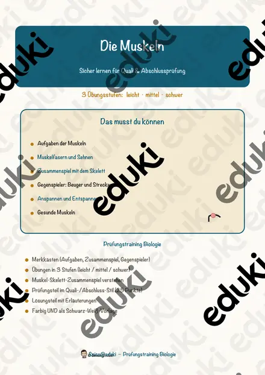
Die Muskeln – Prüfungstraining Biologie (Klasse 8)
Das Skelett – Prüfungstraining Biologie (Klasse 8)
Die Atmung – Prüfungstraining Biologie (Klasse 8)
Die Verdauung – Prüfungstraining Biologie (Klasse 8)
Das Ohr – Prüfungstraining Biologie (Klasse 8)
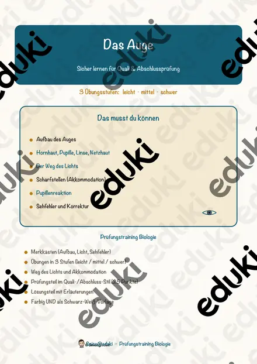
Das Auge – Prüfungstraining Biologie (Klasse 8)
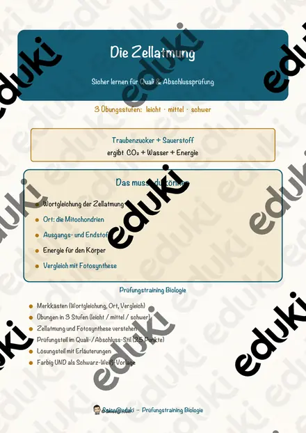
Die Zellatmung – Prüfungstraining Biologie (Klasse 9)
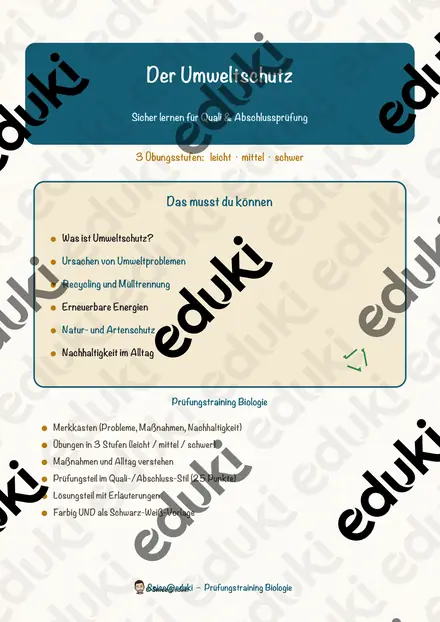
Der Umweltschutz – Prüfungstraining Biologie (Klasse 8)
Das Hormonsystem – Prüfungstraining Biologie (Klasse 9)
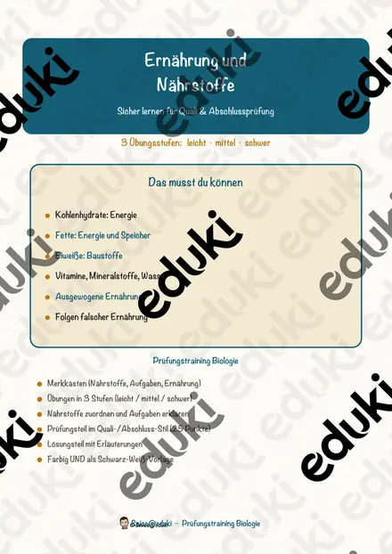
Ernährung und Nährstoffe – Prüfungstraining Biologie (Klasse 8)
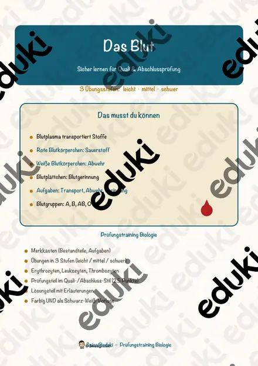
Das Blut – Prüfungstraining Biologie (Klasse 9)
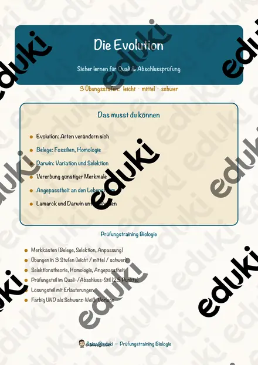
Die Evolution – Prüfungstraining Biologie (Klasse 9)
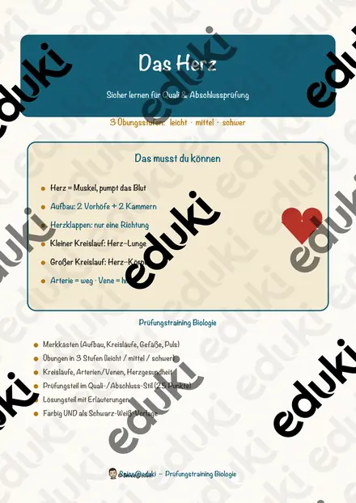
Das Herz – Prüfungstraining Biologie (Klasse 8)
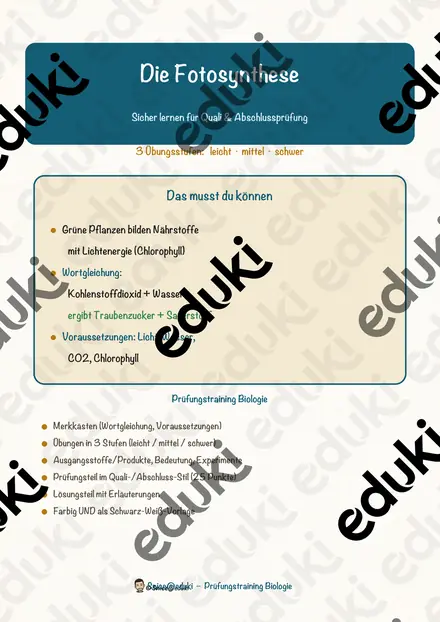
Die Fotosynthese – Prüfungstraining Biologie (Klasse 8)
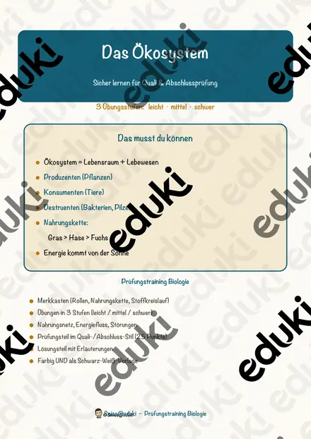
Das Ökosystem – Prüfungstraining Biologie (Klasse 8)
Keine Materialien gefunden – versuch einen anderen Suchbegriff oder Filter.